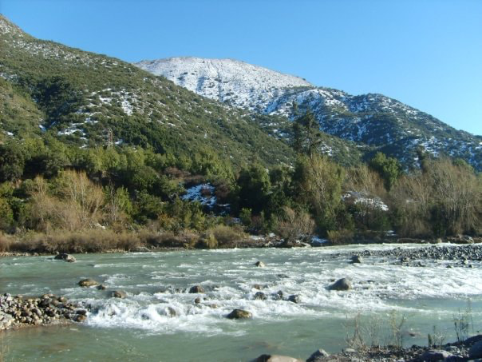
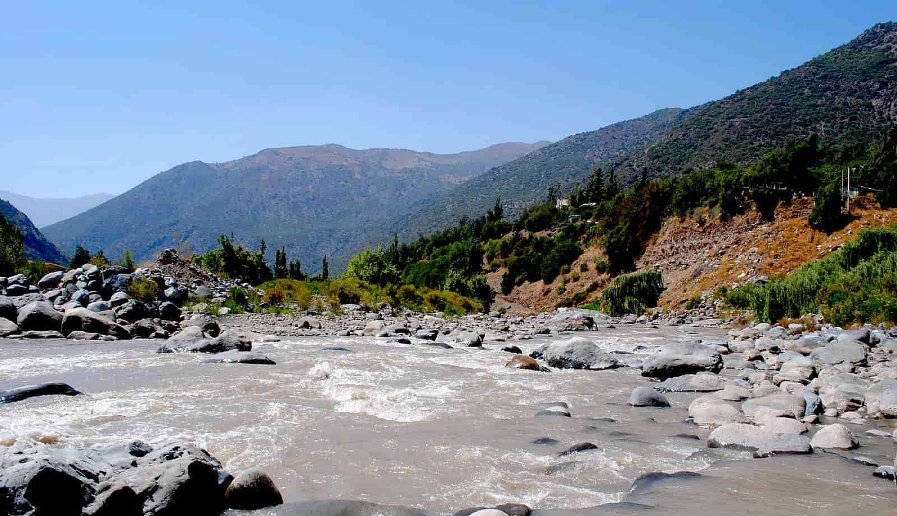
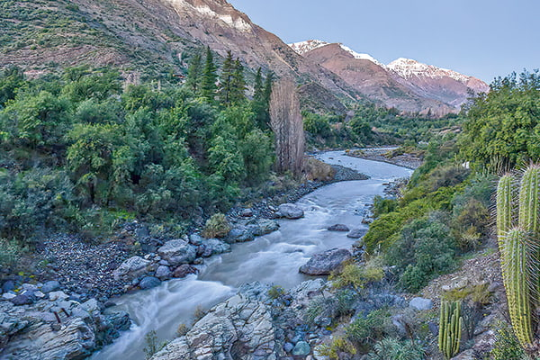

Trip Photos

1. Maipo River Extreme Run
Duration: 4 Hours | Difficulty: High | Minimum Age: 16+ | Season: November to February
Not for the faint of heart! This extreme adventure is for adrenaline junkies ready to take on class IV+ and occasional class V rapids. This is our most intense route and requires previous rafting experience.
- 14 km of challenging rapids
- Advanced equipment and guide ratio 1:4
- Safety kayak support team

2. Maipo River Classic Adventure
Duration: 3 Hours | Difficulty: Moderate | Minimum Age: 12+ | Season: October to March
Glide through the stunning canyon landscapes of the Andes on this classic white water experience. The trip begins with a scenic safety briefing and ends with thrilling class III and IV rapids surrounded by towering mountains. Ideal for beginners and intermediate adventurers.
- 12 km of rapids
- Professional guide
- Equipment included (helmet, wetsuit, life jacket)

3. Family Scenic Float
Duration: 2 Hours | Difficulty: Easy | Minimum Age: 5+ | Season: September to April
A gentle rafting experience designed for families and nature lovers. This trip avoids the wild rapids and instead lets you enjoy the serenity of the Maipo River with stunning views, birdwatching, and a fun, educational experience for children.
- 6 km calm river float
- Family-friendly guides
- Optional picnic area stop